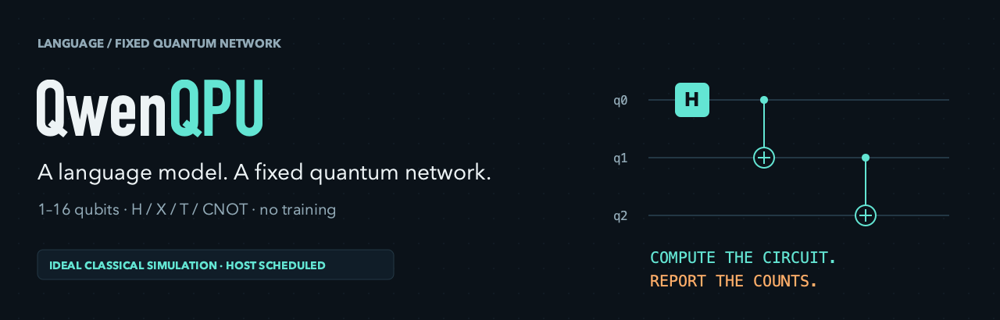
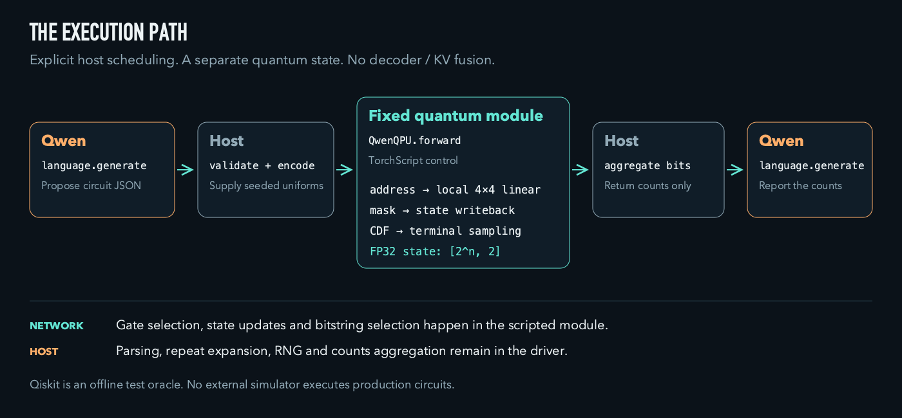
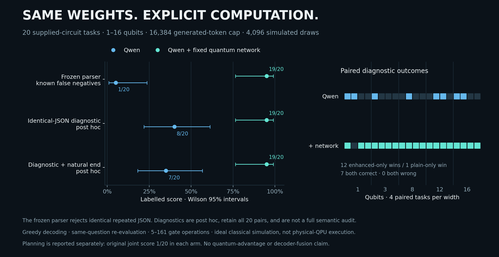

Qwen proposes a bounded gate program. A fixed quantum network computes the state and samples bits. Qwen answers from counts.
Ideal classical simulation · explicit host scheduling · separate quantum state · no decoder/KV fusion
01 / See the execution
A recorded circuit. A visible state.
02 / Try it
Start small. No language weights needed.
Recorded interaction
Python only. Reads the selected historical record.
python examples/replay_recorded.py
Actual fixed-network execution
Requires existing PyTorch. Runs the real core on CPU.
python examples/ghz.py \ --qubits 16 --shots 1024 --seed 123
Observed replay counts: 534 all-zero / 490 all-one.
03 / The implementation
Keep the boundary visible.

1–16 qubits · H/X/T/CNOT · up to 1,000 sequential gates between resets · no training. Host validation, RNG and counts aggregation remain explicit.
04 / The evidence
A comparison, with its scoring defect disclosed.

The frozen parser rejected repeated identical correct JSON. Its affected 1/20 versus 19/20 score is retained, but cannot stand alone as semantic accuracy. The narrow post-hoc audit gives 8/20 versus 19/20; requiring natural finish gives 7/20 versus 19/20. All denominators stay 20.
Original planning joint scores: 1/20 each. Small, seen synthetic sample; not a full semantic audit, quantum advantage or general task claim. Read the complete interpretation.
05 / Release status
Source, examples and original media.
GitHub
This repository contains the implementation, original demo, selected public evidence and reproducible small examples. Language-model weights are distributed separately by the upstream project.
Hugging Face
Registration and upload are paused. Model download is pending publication. The tiny fixed-module specimen is distinct from the upstream language checkpoint.
Weight-release checklist